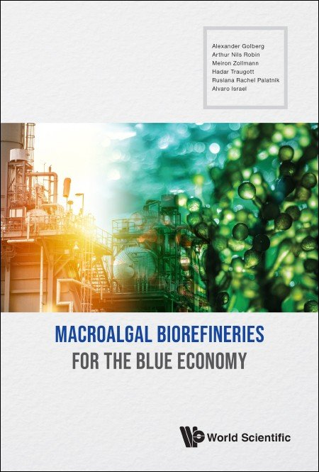

Research Projects
Current research projects
I always look for postdocs, students and industrial partners to conduct novel research.
Macroalgae biorefinery
Questions identified. Seaweed were identified by me back in 2006 as a new potential source of protein for the food industry. However, introduction of the new feedstock requires redevelopment of all aspects of a supply chain from biomass production in the sea, to process intensification for biomass separation and new ingredients characterization. In addition, new processes for food and other (bioplastic, energy) product synthesis are needed as seaweed biomass is very different from terrestrial feedstocks. Finally, new process economic models are needed.
I pioneered the seaweed biorefinery concept development and contributed to
- Upstream processes by development of new onshore and offshore photobioreactors
- Downstream processes by development of pulsed electric field and hydrothermal liquefaction continuous reactors and processes
- Allergy assessment of new seaweed protein
- Life cycle and economic assessment of the processes
Major results
This unique compendium provides an insight into the role of emerging marine biorefineries based on macroalgae (seaweeds) in the development of a sustainable use of ocean resources for economic growth-blue economy. The useful reference text shows a complete picture on the motivation to develop seaweed technologies, and how the combination of biology, cultivation technologies and downstream processing with economics can address the social challenges through the blue growth.
-.
Products of the efforts
- Israel seaweed biorefinering steering committee establishment with multiple universities, major large companies (Israel Electric and Water company), and government ministries (Ministry of Agriculture and Ministry of Science and technology)
- Israel exclusive economic zone marine planning report: aquaculture.
- Startup company (Israel-New Zealand): Genesea Advanced Technologies
- 4 postdocs and 4 PhD students graduated.
- Continuous pulses electric field system for seaweed processing
- Patent on phytochemicals extraction from seaweed using pulsed electric fields
- Patent on device and methods for free floating macroalgae cultivation offshore
- Granted patent on regulated storage capacitor charging device and method
- Patent on Method for production of pha by fermentation of archaea
Municipal organic waste mining
Questions identified. Reduction of mixed food waste is a major goal for decarbonization of the modern urban societies. In the last few years, I have invested in two processes:
- Hydrothermal liquefaction and carbonisation
- Halophytic fermentation of food waste
The goal is to remove methane emissions from food waste and reduce the volumes of plastic waste by producing new products such as biocrude, biochar and polyhydroxyalkanoates and pure and mixed with packaging food waste.
Major results
- 4 publications on hydrothermal liquefaction and carbonisation
- 2 publications on bread and avocado waste conversion into bioplastic- polyhydroxyalkanoates
Products of the efforts
- Development and contraction of the continuous hydrothermal liquefaction reactor working at 0.5L/h
- Fermentation process of waste to PHA scale up to 200L
- 3 MSc students graduated. 11 BSc final projects in Mechanical Engineering students
Eco-health processes and technologies to enable sustainable hospitals infrastructure development
Questions identified. Several questions to enable sustainable development of hospital infrastructures have been identified with local staff
- Local production of biocrude and biochar for emergency energy supply to hospital using hospital produce food waste and mixed with packaging food waste
- Disinfection of water systems to prevent Legionella sp. infection
- Solar damages to skin and skin cancer diagnostics
Major results
- 4 published papers
- Mapping of all hospital waste by type, cost and environmental inputs
- Developing a process for hospital food waste conversion into biocrude and biochar for local use
- A 200 patient clinical trial for skin cancer diagnostics using electroporation based biopsy
Products of the efforts
- Device for local waste to energy conversion in the Hospital
- Patent on devices and methods for rapid cancer diagnostics with electroporation
- Spin off Boston based startup company- Elsy Medical
Electroporation and pulsed electric fields for wound healing
Questions identified. Wound healing is a complex phenomenon that is very difficult to control. Nevertheless, control is required to prevent abnormal healing processes such scars or nonhealing wounds. We developed the application of high-voltage, pulsed electric fields in wound healing with particular emphasis on burn wounds. High-voltage, pulsed electric fields lead to the change in the cell membrane permeability, a process coined as electroporation. In the recent decades, electroporation found multiple applications in medicine and biotechnology, yet its application in wound healing has started to emerge recently. The questions we work on deal with electroporation uses in
- a model for scarless wound healing
- scar reduction following third-degree burns
- skin rejuvenation
- burn wounds disinfection
- gene electrotransfer to treat chronic wounds
Major results
What is a wound, how does it heal, and how can we prevent scarring? The concept of wound healing has puzzled humans even before the advent of modern medicine.
In recent years, bioengineering has tackled the problems of cancer, tissue engineering and molecular manufacturing. The broad spectrum of technologies developed in these fields could potentially transform the wound care practice. However, entering the world of wound healing research is challenging — a broad spectrum of knowledge is required to understand wounds and improve healing.
This book provides an essential introduction of the field of wound healing to bioengineers and scientists outside the field of medicine. Written by leading researchers from various fields, this book is a comprehensive primer that gives readers a holistic understanding of the field of wound biology, diagnostics and treatment technologies.
Products of the efforts
Research undertaken with students
In the last 10 years I conducted interdisciplinary research with international group of excellent students from Israel, France, Canada, Germany, India, Georgia, and the USA. This work resulted in multiple publications and conference presentations.
Research with the external community
In 2018 I initiated a new collaborative research center with Meir Medical Center (Eco-Health) with a goal to develop multiple collaborations on environment and technology related issues related to health and especially to the hospital infrastructure. The initiate, called Eco-health, resulted in multiple joint projects where the hospital provided the problem and my group the solutions. Additional valuable output from this initiate was training of clinical fellows on research.
The future - Join me!
Phenomenological structure formation and destruction continuous processes development Traditional continuous processes including extrusion, pulsed electric field, hydrothermal liquefaction and fermentation rely on a complex interplay of factors such as mixed flow, adjustable throughput, head pressure loss, moisture, and temperature. Consequently, the flow path and the type of flow generated inside the specific reactors (extruders, pulsed electric field devices, fermenters or high pressure reactors) remain poorly understood, with undefined boundary conditions. These boundary conditions encompass variables like wall velocity, shear stress distribution, effective strength, elongation flow location, hot spots due to shear heating, slip-stick flow areas, and pressure distribution across the extrusion barrel and distributor. Understanding these boundaries is critical for achieving clear and comprehensible structure and, thus, formation/destruction within the reactors. The process of structurization and texturization is highly dynamic, especially when dealing with highly concentrated suspensions. The transition of structure from a plastic suspension to a viscoelastic food polymer makes it highly responsive to any anisotropic flow field. To address these challenges, we have outlined key research and development objectives aimed at clarifying the texturization and other struction formation/destruction phenomena under well-defined flow conditions (continuous processes).